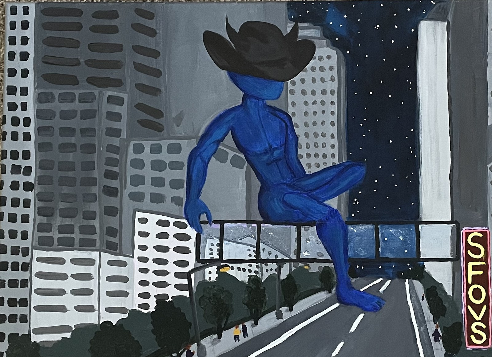

TheMuseum OFBrilliance
Paintings, exhibitions, stories,
and curious ideas.
Welcome to the museum
An artist’s practice.
A world of its own.
The Museum of Brilliance is the creative home of Keo, an independent visual artist based in Atlanta, Georgia. A place for paintings, multimedia, exhibitions, and writing.

From the exhibition archiveFeatured exhibition · 01
Shots Fired on
Valentine Street
Dallas, Texas
Keo’s first solo exhibition, bringing together paintings, mixed-media objects, and a written screenplay.
View the exhibitionThe artist
The mind behind
the museum.
A painting practice, a place for exhibitions, and a home for ideas that linger.
Meet KeoThe journal · Forthcoming
Notes from
the everyday.
Reflections, studio notes, and occasional conversations with creatives in Keo’s orbit. The journal is taking shape.